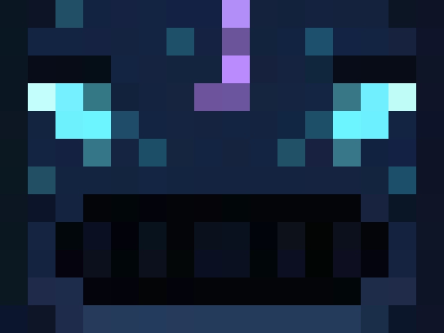
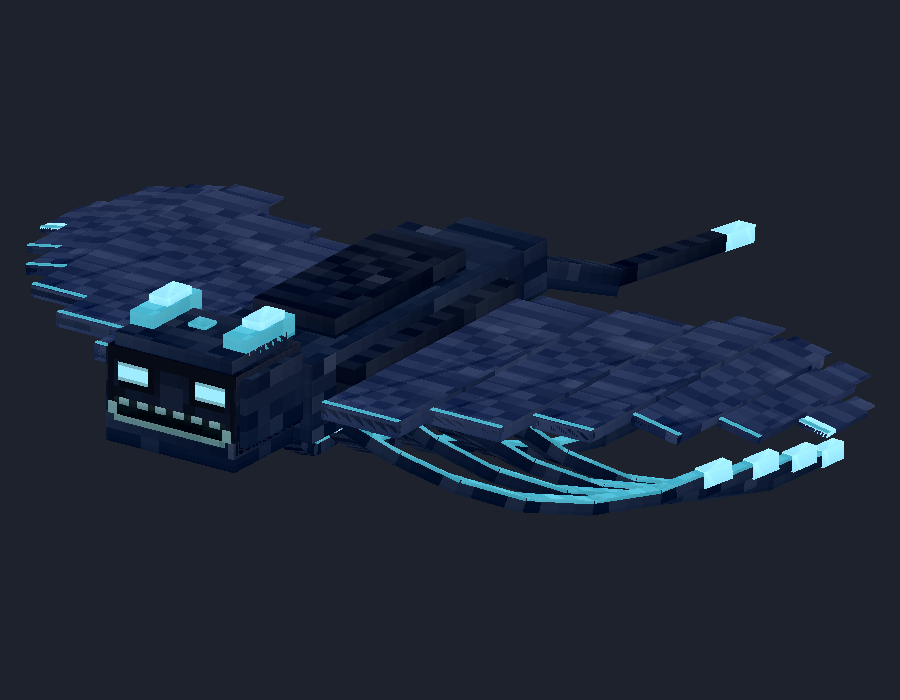
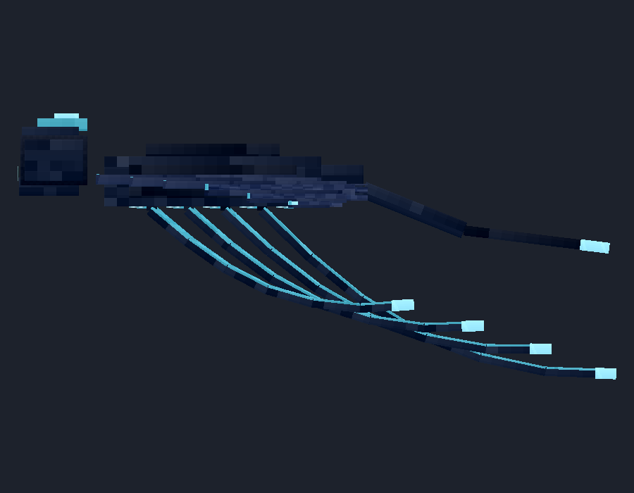

Original body, wings and tendrils preserved. Original file untouched. Head moved 2.25 units toward torso, with 0.25-unit overlap. Software views, not native/in-game captures.
Updated Blockbench project · Details







Animate → select blink or mouth_open → Play.